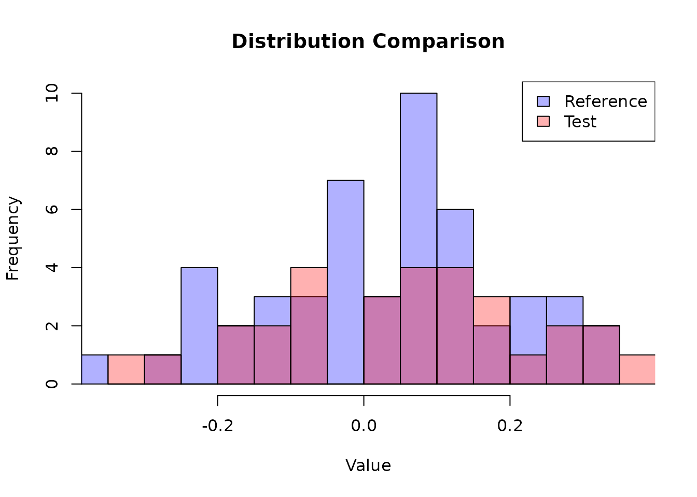

Introduction
While average equivalence testing focuses on mean differences, quantile equivalence testing assesses whether specific quantiles (percentiles) of two distributions are equivalent. This is particularly relevant when:
- Tail behavior is more important than averages (e.g., safety margins)
- Regulatory guidelines specify quantile-based criteria
- Risk assessment focuses on extreme values
- Skewed distributions make means less representative
The qtost() function implements quantile-based
equivalence testing following the methodology of Wu et al. (2025).
Key Applications
- Pharmacokinetics: Testing equivalence of trough concentrations (lower quantiles) or peak exposures (upper quantiles)
- Safety studies: Ensuring adverse events don’t exceed acceptable thresholds
- Environmental monitoring: Testing pollution levels at critical percentiles
- Quality control: Ensuring product specifications at various quantiles
The Quantile Equivalence Problem
Statistical Framework
Given two populations (reference) and (test), we want to test whether quantile of is equivalent to quantile of .
Available Methods
The qtost() function supports:
-
Unadjusted qTOST
(
method = "unadjusted"): Standard quantile TOST -
Alpha-qTOST (
method = "alpha"): Recommended - Finite sample correction (Wu et al. 2025)
Example 1: FDA Drug Label Data
We use real summary statistics from an FDA drug label comparing male and female populations.
Setup
Data from FDA label (C_trough concentrations):
- Reference group (males): mean = 35.6, SD = 16.7, n = 106
- Test group (females): mean = 41.6, SD = 24.3, n = 14
We want to test equivalence at the 80th percentile with margin .
Prepare Data
Since the original data are not normally distributed, we apply a log-normal transformation:
# Original summary statistics
x_bar_orig <- 35.6
x_sd_orig <- 16.7
n_x <- 106
y_bar_orig <- 41.6
y_sd_orig <- 24.3
n_y <- 14
# Transform to log-normal parameters
x_bar <- log(x_bar_orig^2 / sqrt(x_bar_orig^2 + x_sd_orig^2))
x_sd <- sqrt(log(1 + (x_sd_orig^2 / x_bar_orig^2)))
y_bar <- log(y_bar_orig^2 / sqrt(y_bar_orig^2 + y_sd_orig^2))
y_sd <- sqrt(log(1 + (y_sd_orig^2 / y_bar_orig^2)))
# Create summary statistics lists
x_summary <- list(mean = x_bar, sd = x_sd, n = n_x)
y_summary <- list(mean = y_bar, sd = y_sd, n = n_y)
cat("Reference (males) - transformed:\n")
#> Reference (males) - transformed:
cat(" Mean:", round(x_bar, 4), "\n")
#> Mean: 3.4729
cat(" SD:", round(x_sd, 4), "\n")
#> SD: 0.446
cat(" n:", n_x, "\n\n")
#> n: 106
cat("Test (females) - transformed:\n")
#> Test (females) - transformed:
cat(" Mean:", round(y_bar, 4), "\n")
#> Mean: 3.5813
cat(" SD:", round(y_sd, 4), "\n")
#> SD: 0.5418
cat(" n:", n_y, "\n")
#> n: 14Run Standard qTOST
qtost_standard <- qtost(
x = x_summary,
y = y_summary,
pi_x = 0.8, # 80th percentile
delta = 0.15,
alpha = 0.05,
method = "unadjusted"
)
print(qtost_standard)
#> ✖ Can't accept quantile (bio)equivalence
#> Equiv. Region: |---------------------|
#> Estim. Inter.: (------------x------------)
#> CI = (0.50105 ; 0.83712)
#>
#> Method: qTOST
#> alpha = 0.05; Equiv. lim. = (0.65000 ; 0.95000)
#> theta_hat = 0.49265; Stand. dev. = 0.29791Run Alpha-qTOST (Recommended)
The alpha-qTOST corrects the significance level to recover the nominal size in finite samples, which improves power:
qtost_alpha <- qtost(
x = x_summary,
y = y_summary,
pi_x = 0.8,
delta = 0.15,
alpha = 0.05,
method = "alpha",
B = 10000 # Monte Carlo replications
)
print(qtost_alpha)
#> ✖ Can't accept quantile (bio)equivalence
#> Equiv. Region: |----------------------|
#> Estim. Inter.: (------------x------------)
#> CI = (0.51429 ; 0.82881)
#>
#> Method: alpha-qTOST
#> alpha = 0.05; Equiv. lim. = (0.65000 ; 0.95000)
#> Corrected alpha = 0.06259
#> theta_hat = 0.49265; Stand. dev. = 0.29791
cat("\nCorrected alpha:", round(qtost_alpha$corrected_alpha, 4), "\n")
#>
#> Corrected alpha: 0.0626Compare Methods
compare_to_qtost(qtost_alpha)
#> qTOST: ✖ Can't accept quantile (bio)equivalence
#> alpha-qTOST: ✖ Can't accept quantile (bio)equivalence
#>
#> Equiv. Region: |---------------------|
#> qTOST: (----------x--------------)
#> alpha-qTOST: (-----------x------------)
#>
#> CI - low CI - high
#> qTOST: 0.50105 0.83712
#> alpha-qTOST: 0.51429 0.82881
#>
#> Equiv. lim. = dw/up 0.65000 0.95000Interpretation:
- Neither the standard qTOST nor the alpha-qTOST accepts equivalence here: with only 14 observations in the female group, the interval for the 80th percentile of the test population is too wide to fall inside the equivalence region
- The alpha-qTOST uses a corrected level of about 0.063 instead of 0.05, which narrows the interval, but not enough in this example
-
compare_to_qtost()displays both intervals against the equivalence region
Example 2: Simulated Raw Data
When raw data are available, qtost() can work directly
with the data vectors.
Generate Data
set.seed(12345)
# Reference group
n_x <- 50
x_data <- rnorm(n_x, mean = 0, sd = 0.15)
# Test group (slightly shifted)
n_y <- 30
y_data <- rnorm(n_y, mean = 0.02, sd = 0.15)
# Visualize
hist(x_data, breaks = 15, col = rgb(0, 0, 1, 0.3),
xlim = range(c(x_data, y_data)),
main = "Distribution Comparison",
xlab = "Value")
hist(y_data, breaks = 15, col = rgb(1, 0, 0, 0.3), add = TRUE)
legend("topright", legend = c("Reference", "Test"),
fill = c(rgb(0, 0, 1, 0.3), rgb(1, 0, 0, 0.3)))
Test Multiple Quantiles
We can test equivalence at several quantiles simultaneously:
# Test 50th and 80th percentiles
quantiles <- c(0.5, 0.8)
mqtost_result <- qtost(
x = x_data,
y = y_data,
pi_x = quantiles,
delta = 0.15,
alpha = 0.05,
method = "alpha",
B = 10000
)
print(mqtost_result)
#> ✖ Can't accept quantile (bio)equivalence
#> Equiv. Region for q1: |-----------------------------|
#> alpha-qTOST for q1: (-------------x-------------)
#> Equiv. Region for q2: |-----------------------------|
#> alpha-qTOST for q2: (------------x------------)
#>
#> CIs:
#> q1 = (0.31067; 0.56195) ✖
#> q2 = (0.59936; 0.83478) ✖
#>
#> Equivalence limits:
#> q1 = (0.35000; 0.65000)
#> q2 = (0.65000; 0.95000)
#>
#> Method: alpha-qTOST
#> alpha = 0.05; Corrected alpha = 0.07521Interpretation:
- Equivalence is accepted only if every quantile satisfies it; here neither the median nor the 80th percentile does, so the joint test does not accept equivalence
- The corrected level is calibrated jointly for the two quantiles
Single vs. Multiple Quantiles
Single Quantile Testing
Use a scalar for pi_x:
single_qtost <- qtost(
x = x_data,
y = y_data,
pi_x = 0.9, # Test only 90th percentile
delta = 0.05, # the region (pi_x - delta, pi_x + delta) must stay inside (0, 1)
method = "alpha"
)
print(single_qtost)
#> ✖ Can't accept quantile (bio)equivalence
#> Equiv. Region: |-------------------|
#> Estim. Inter.: (-----------x-----------)
#> CI = (0.78207 ; 0.89666)
#>
#> Method: alpha-qTOST
#> alpha = 0.05; Equiv. lim. = (0.85000 ; 0.95000)
#> Corrected alpha = 0.19943
#> theta_hat = 1.02097; Stand. dev. = 0.28655Multiple Quantile Testing
Use a vector for pi_x:
multiple_qtost <- qtost(
x = x_data,
y = y_data,
pi_x = c(0.25, 0.75), # up to two quantiles can be tested jointly
delta = 0.15,
method = "alpha"
)
print(multiple_qtost)
#> ✖ Can't accept quantile (bio)equivalence
#> Equiv. Region for q1: |------------------------|
#> alpha-qTOST for q1: (---------x--------)
#> Equiv. Region for q2: |-----------------------|
#> alpha-qTOST for q2: (----------x----------)
#>
#> CIs:
#> q1 = (0.12421; 0.33126) ✔
#> q2 = (0.54714; 0.78702) ✖
#>
#> Equivalence limits:
#> q1 = (0.10000; 0.40000)
#> q2 = (0.60000; 0.90000)
#>
#> Method: alpha-qTOST
#> alpha = 0.05; Corrected alpha = 0.07969Note: At most two quantiles can be tested jointly; the corrected level is then calibrated for the pair.
Understanding the Method
Why Quantile Testing is Different
Testing quantiles is fundamentally different from testing means because:
- Nonlinear transformation: Quantiles depend nonlinearly on distribution parameters
- Variance structure: Quantile estimators have complex variance expressions
- Tail behavior: Extreme quantiles (e.g., 95th percentile) are harder to estimate
- Finite sample behavior: Small samples affect quantile estimates more severely
Alpha-qTOST Correction
The alpha-qTOST adjusts the significance level to account for:
- Conservative bias in finite samples
- Multiple testing when evaluating several quantiles
- Asymmetric behavior at extreme quantiles
The correction is computed via:
- Monte Carlo simulation to find the supremum of the rejection region
- Iterative optimization to achieve the desired type I error rate
- Power calculations to verify finite sample performance
Practical Guidelines
Choosing Quantiles to Test
Common choices:
- Median (): Central tendency, less sensitive to outliers than mean
- Lower quantiles (): Safety margins, worst-case scenarios
- Upper quantiles (): Peak exposures, maximum responses
- Multiple quantiles: Comprehensive assessment of distribution shape
Choosing Equivalence Margins
The margin should be chosen based on:
- Clinical relevance: What quantile difference is meaningful?
- Scale of measurement: Absolute vs. relative margins
- Historical data: Variability in previous studies
- Regulatory requirements: Guidelines may specify margins
Example: For a log-transformed pharmacokinetic parameter, corresponds to roughly a 16% difference on the original scale.
Sample Size Considerations
Quantile estimation requires adequate sample sizes, especially for:
- Extreme quantiles (e.g., 5th or 95th percentile)
- Small groups: Both and should be reasonably large
- High variability: More samples needed when SD is large
Rule of thumb:
- For median (): Similar requirements to mean testing
- For extreme quantiles ( or ): Need 2-3× larger samples
Data Requirements
With Raw Data
qtost(x = x_vector, y = y_vector, pi_x = 0.8, delta = 0.15)Requirements:
- Numeric vectors
- Normality assumption (test with
shapiro.test()if unsure)
Comparison with Mean-Based Testing
Let’s compare quantile and mean-based equivalence testing:
# Quantile test at median (50th percentile)
qtost_median <- qtost(
x = x_data,
y = y_data,
pi_x = 0.5,
delta = 0.15,
method = "alpha"
)
# Mean-based test
mean_test <- ctost(
theta = mean(y_data) - mean(x_data),
sigma = var(y_data)/length(y_data) + var(x_data)/length(x_data),
nu = min(length(x_data), length(y_data)) - 1,
delta = 0.15,
method = "optimal"
)
cat("Quantile test (median):", qtost_median$decision, "\n")
#> Quantile test (median): FALSE
cat("Mean test:", mean_test$decision, "\n")
#> Mean test: TRUEWhen they differ:
- For symmetric distributions, median ≈ mean, so results are similar
- For skewed distributions, quantile tests may be more appropriate
- For safety margins, lower quantiles are more relevant than means
Advanced Topics
Testing Ratios of Quantiles
For log-transformed data, equivalence on the log scale corresponds to ratios on the original scale:
# On log scale: test if -0.15 < log(pi_y / pi_x) < 0.15
# On original scale: test if exp(-0.15) < pi_y / pi_x < exp(0.15)
cat("Equivalence margin:\n")
#> Equivalence margin:
cat(" Log scale: [-0.15, 0.15]\n")
#> Log scale: [-0.15, 0.15]
cat(" Original scale: [", round(exp(-0.15), 3), ",", round(exp(0.15), 3), "]\n")
#> Original scale: [ 0.861 , 1.162 ]
cat(" Percentage: [", round((exp(-0.15) - 1) * 100, 1), "%,",
round((exp(0.15) - 1) * 100, 1), "%]\n")
#> Percentage: [ -13.9 %, 16.2 %]Assessing Normality
The quantile tests assume normality. Check this assumption:
# Formal test
shapiro_test <- shapiro.test(x_data)
cat("Shapiro-Wilk test p-value:", round(shapiro_test$p.value, 4), "\n")
#> Shapiro-Wilk test p-value: 0.4211If normality is violated:
- Transform the data (log, Box-Cox, etc.)
- Use non-parametric methods (if available)
- Collect more data to invoke asymptotic normality
Sensitivity Analysis
Test equivalence at multiple quantiles to assess robustness:
quantiles_seq <- c(0.1, 0.25, 0.5, 0.75, 0.9)
# a margin of 0.05 keeps (pi_x - delta, pi_x + delta) inside (0, 1) for every quantile
results <- sapply(quantiles_seq, function(q) {
test <- qtost(x = x_data, y = y_data, pi_x = q, delta = 0.05, method = "alpha")
test$decision
})
data.frame(
Quantile = quantiles_seq,
Percentile = paste0(quantiles_seq * 100, "th"),
Equivalent = results
)
#> Quantile Percentile Equivalent
#> 1 0.10 10th TRUE
#> 2 0.25 25th FALSE
#> 3 0.50 50th FALSE
#> 4 0.75 75th FALSE
#> 5 0.90 90th FALSESummary
- Quantile equivalence testing assesses distributional similarity beyond means
- Use
method = "alpha"for finite sample correction - Can work with raw data or summary statistics
- Test single or multiple quantiles simultaneously
- Requires normality assumption (transform data if needed)
- Choose quantiles based on scientific relevance (median, tails, safety margins)
- Larger samples needed for extreme quantiles
References
For methodological details:
- Wu et al. (2025) for quantile equivalence testing methodology
For related methods:
- Average Equivalence Testing: Univariate for mean-based testing
- Average Equivalence Testing: Multivariate for multivariate mean testing